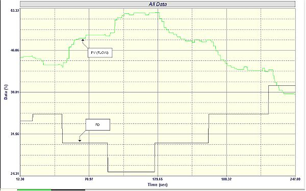
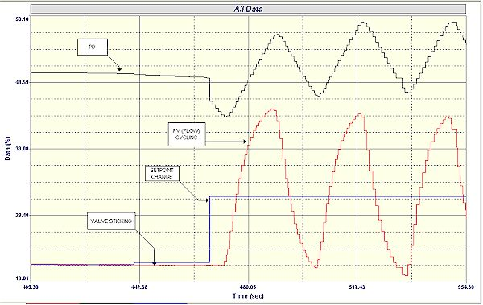
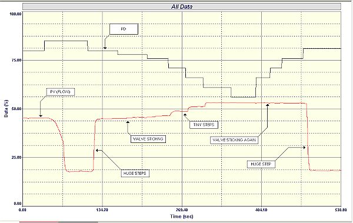
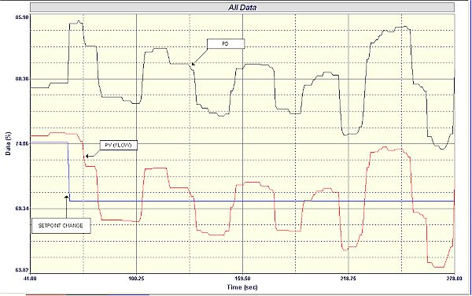
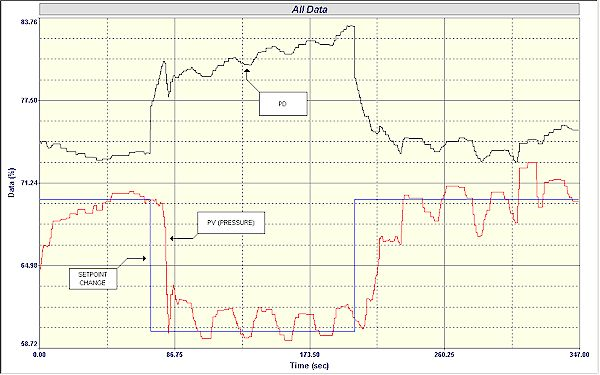
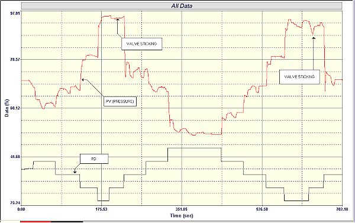

|
| [Home] [About us] [Contact us] [Training] [Optimisation services] [Protuner] |
| [Loop signatures] [Case histories] [Continuous loop performance monitoring] |
|
Control Loop Case History 82 PROBLEMS IN A CANADIAN PLANT People often ask me if I find the same sort of problems in plants in countries other than Africa. My reply to this is that in every plant, in every country that I have visited, there is an almost total lack of knowledge on the practical aspects of regulatory process control. This has again been borne out when I recently presented one of our courses on practical control optimisation in a very large metals smelting plant in Canada. Although rather old, the plant in general was reasonably up to date when it came to the control side, and has a large team of technical specialists whom I was very impressed with. Although not familiar with the Canadian training standards, I found the C&I technicians extremely competent, knowledgeable, and self-confident. Their standard was probably the highest I have encountered in most plants, with the possible exception of a few plants in the UK. I asked the Control Manager if they were specially picked, and he replied they are typical of C&I technicians in Canada, and that the qualification levels are very high. Although extremely courteous they initially displayed a slightly suspicious attitude towards the course. This is not unusual in first world countries when people are told to attend a course given by someone from "darkest Africa". However within as fairly short while, as most people do, they were enjoying it, and finding it extremely informative. Several of them came up to me at the end of the course and said it was the best course on regulatory control they had ever attended, and they had learnt an enormous amount, which would help them in their work tremendously. As competent as they were, they had never received training before on the practical aspects of regulatory control, and had, like everyone else around the world, learnt "to fly by the seats of their pants", as most of the basic theory taught in control training institutions is almost unusable in real life. I have extracted a few of the many examples of problems found during the practical session in the plant, to illustrate the lack of knowledge and understanding of control loops. The first example is extremely interesting. Relatively strange behaviour was discovered on a fairly simple flow control loop. As can be seen in Figure 1, on the closed loop test a huge overshoot occurred when a setpoint change was made in the downward direction. My first thoughts on seeing this was that there was a large filter on the PV signal, which can cause overshoots to occur on setpoint changes. However when the setpoint was moved upwards, the response was extremely slow.
Figure 1 I had never seen a phenomenon like this before. Another possible reason that came to mind that could cause it, was that possibly the valve had a strange response and moved differently in the one direction to the other. Therefore an open loop test was performed – see Figure 2. However this shows nothing remarkable, and the valve responded reasonably well, and was actually slower in the downward direction.  Figure 2 The control system was an older model American DCS. An examination was made of the control block to try and find if there was anything strange in the controller configuration, and it was observed that the anti-reset wind -up (ARW) limit on the low side was set incorrectly. It was set at a value of about 45% on the PV scale, whilst the controller's output low limit was set at zero. Anti-reset windup (discussed in the Loop Signature Series) is very dependent on how the controller manufacturer sets it up. Most of them set it to operate at the controller's high and low output limits, which in most controllers are usually at 0% and 100%. However in this case the manufacturer had ARW limits that could be set independently to the output limits. Furthermore for some reason they had a feature in the ARW that if the output crossed over the ARW limit the speed of the integral term was increased by a factor of 16. The explanation in the manual, like nearly all manufacturers' manuals, was very confusing. Generally when you run into an ARW limit, you wish to freeze the integral value, and not make it faster, and I am not sure why they did this. In any event it explained why the overshoot occurred. Once again it is an excellent example of why people need to understand their controllers, which is something I am always pushing. Incidentally the ARW limits were found to be set incorrectly on many other loops as well, which would have caused control problems on those loops. The second example is of a very important flow control loop. The Operator had been complaining that the performance was poor, but the C&I people thought the tuning was good. In Figure 3, the closed loop "as found" test, it can be seen right at the beginning that a small setpoint change was made, just to get the setpoint to a "round" number.  Figure 3 The controller output (PD) immediately starts moving but the flow remained constant, as the valve didn't move. When a large setpoint change was made the PD moved quite bit before the valve (and hence the PV) started changing. The process then went into a rather strange looking cycle, which can be explained after looking at Figure 4, which is of the open loop test.  Figure 4 In the first steps which were up and then down, it can be seen that the valve moved in quite huge steps. However in subsequent small further downward steps of the PD the valve hardly moved at all, occasionally moving in just little steps, and eventually it "decided" it had done enough and stopped moving. The PD then reversed but the valve remained in its "mutinous" mood and would not move until the PD had moved up nearly 25%. In the last article in this Case History series it was mentioned that valves need to be obedient and follow the PD if good control is to be achieved. Here again is an example of how important this is. In automatic, and going back to the previous figure of the closed loop test , one can see how the PD integrated and integrated until finally the valve moved with a massive jump, taking the process way past setpoint. This was then repeated in the opposite direction. There is no way one can control with a valve behaving like this. Figure 5 is the closed loop "as found" test on a level control in a small tank. The tank had an extremely small retention time of about 12 seconds (equivalent to a process gain of 0.083), which makes the control extremely difficult. It has to be very fast, and it is important that the final control element operates quickly and follows the PD properly.  Figure 5 It can be seen in the figure that the level was pretty close, but not at setpoint. As soon as the setpoint was changed, the process went into a rather strange and unusual looking cycle with an apparent "squarish" wave appearance. Without going into too much detail here, there were in reality two problems causing this instability. Firstly the tuning was poor with too much gain, and too fast an integral. Secondly the control element in this case was a variable speed pump, which seemed to jump around quite a bit with a constant input. Unfortunately time did not permit the latter to be investigated properly, and with better tuning, satisfactory, though bumpy control was achieved. In the last two examples it might be noted that the processes were more or less at setpoint when the closed loop "as found" tests were started, and only later when a setpoint change was made that problems like instability occurred. How is this possible? This is a very important point, because it explains why I am often disbelieved when I tell people that at least 85 % of their loops are probably working completely inefficiently in automatic. Most people judge their loop performance, by firstly seeing if they are in automatic , and secondly by seeing if the PV's are lying on, or close to setpoints. If they are, then people think the loops are working well. However one must remember that most continuous process plants are spending most of their time running at steady state conditions, where changes are often few and fairly slow. What happens in many cases is that the operators get the process to the setpoint in manual, and once it is there and stable they switch over to automatic. If there are no changes taking place, the loop sits there looking quite good. However if a change does occur, the control cannot deal with it. The operator then puts it back into manual and gets it right again. The last example is of a pressure control of an acid header. Figure 6 shows the closed loop "as found" test. It can be seen that the pressure seems to be controlled quite well but there is an continuous small cycle going on.  Figure 6 The open loop test (see Figure 7) showed that there is a certain amount of load fluctuations, but these would not account for the cycling seen in the closed loop test. It was also observed from the latter test that there was excessive hysteresis (measured at 5%) on the valve, meaning that the controller output has to move back through 5% before the valve starts moving on each reversal. In addition it can be seen from the process gain (change in PV over changer in PD), that the valve was about 3 times oversized.  Figure 7 The cycling was being largely caused by a combination of poor tuning and the hysteresis problem. It should be remembered that if a cycle occurs on a loop with an oversized valve, the amplitude of the cycle will be amplified directly in proportion to the oversize factor. The valve was changed out overnight, and the next day the loop was re-optimised and very satisfactory control was obtained. To summarise, even sophisticated countries have exactly the same sort of problems in the same quantities that we do, and the technical staff there however well trained also lack knowledge of practical control, due to a complete lack of training in this field. Michael
Brown is a specialist in control loop optimisation, with many years of
experience in process control instrumentation. His main activities are
consulting, and teaching practical control loop analysis and
optimisation. He gives training courses which can be held in clients'
plants, where students can have the added benefit of practising on live
loops. His work takes him to plants all over South Africa, and also to
other countries. He can be contacted at: |